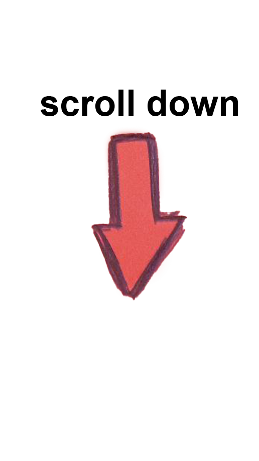
Conflicts and crisis continue to force people from their homes.
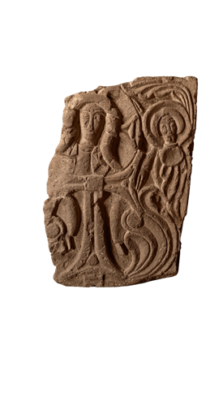
Leaving them uncertain about their future.
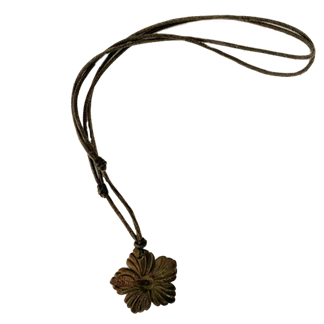
Left behind, centuries-old monuments and artifacts face the threat of destruction and erasure.
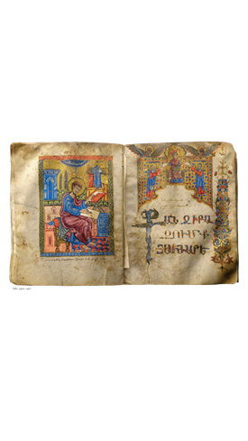
On November 2020, Azerbaijan attacked the historical Armenian lands of the Republic of Artsakh and took control of the region afterward.
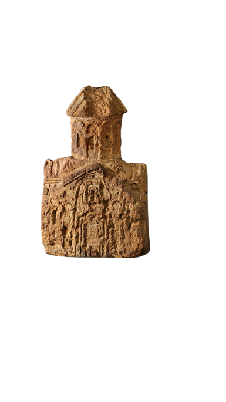
Many had to leave their homes behind.
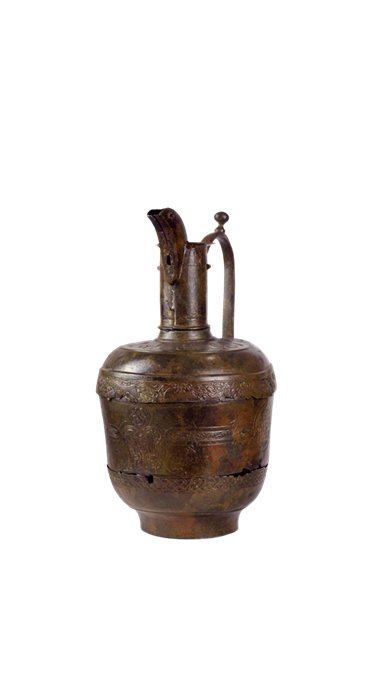
Today, many museums in Artsakh are at risk of cultural cleansing.
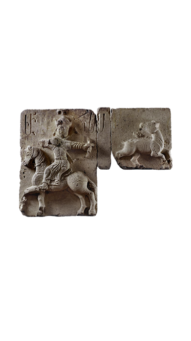
Over the centuries, Armenians have faced the shadow of erasure. Between 1915 and 1922, an estimated 1,500,000 Armenians perished in a genocide.
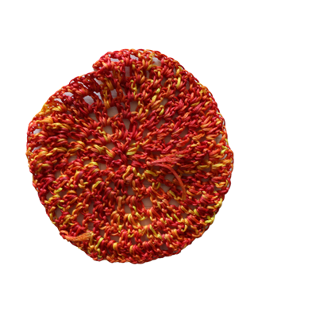
The Armenian diaspora has spread across the world.
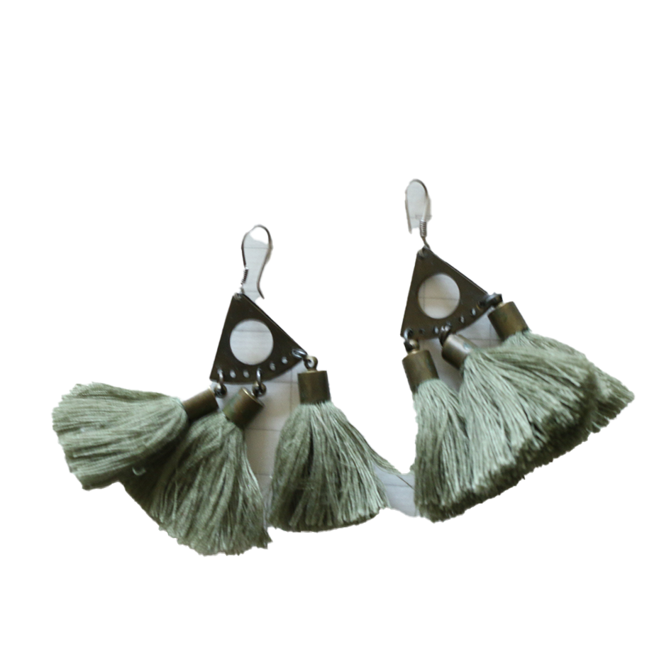
Leaving their homes behind, many carried their cherished objects with them.
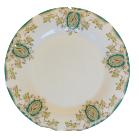
Pictures, jewelry, books, and home decorations.
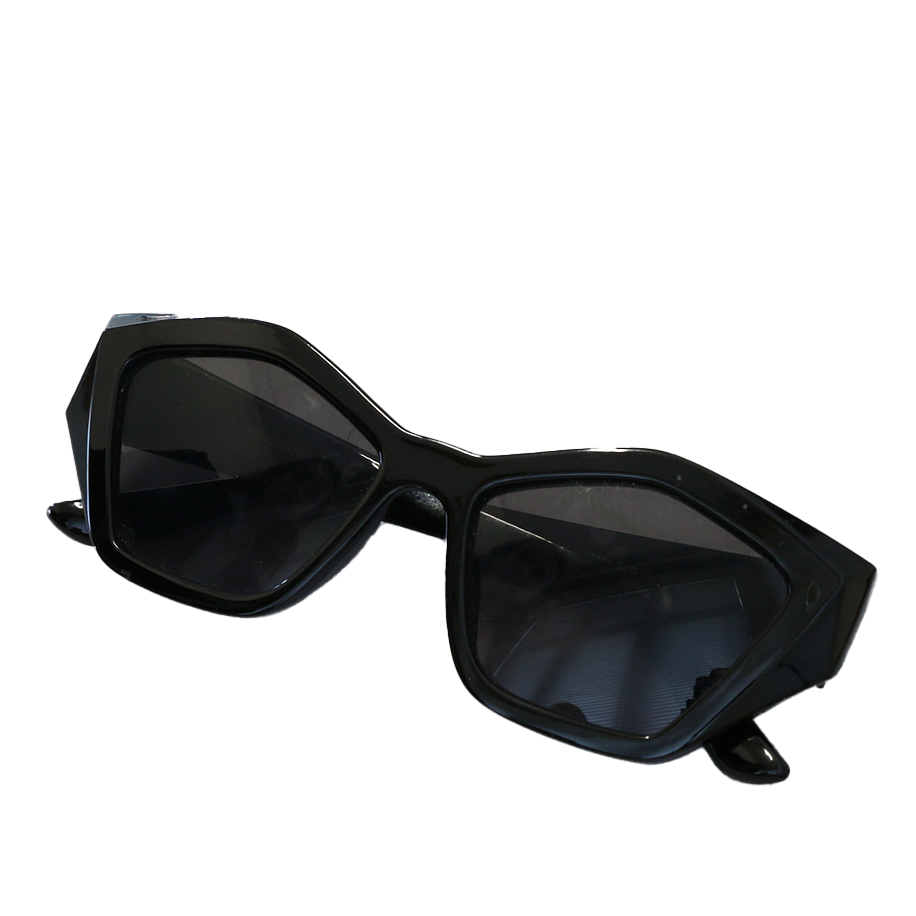
What stories do such objects hold?
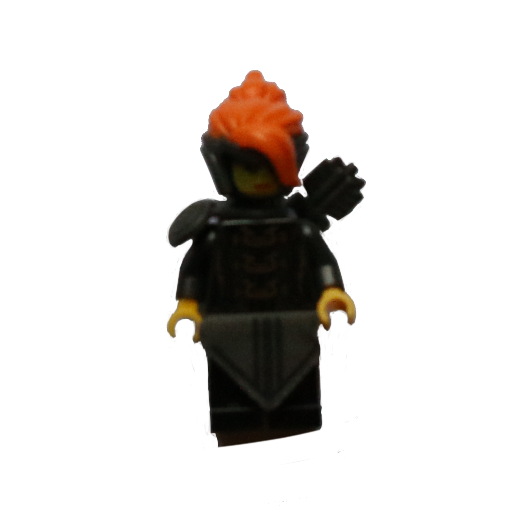
This is their story.
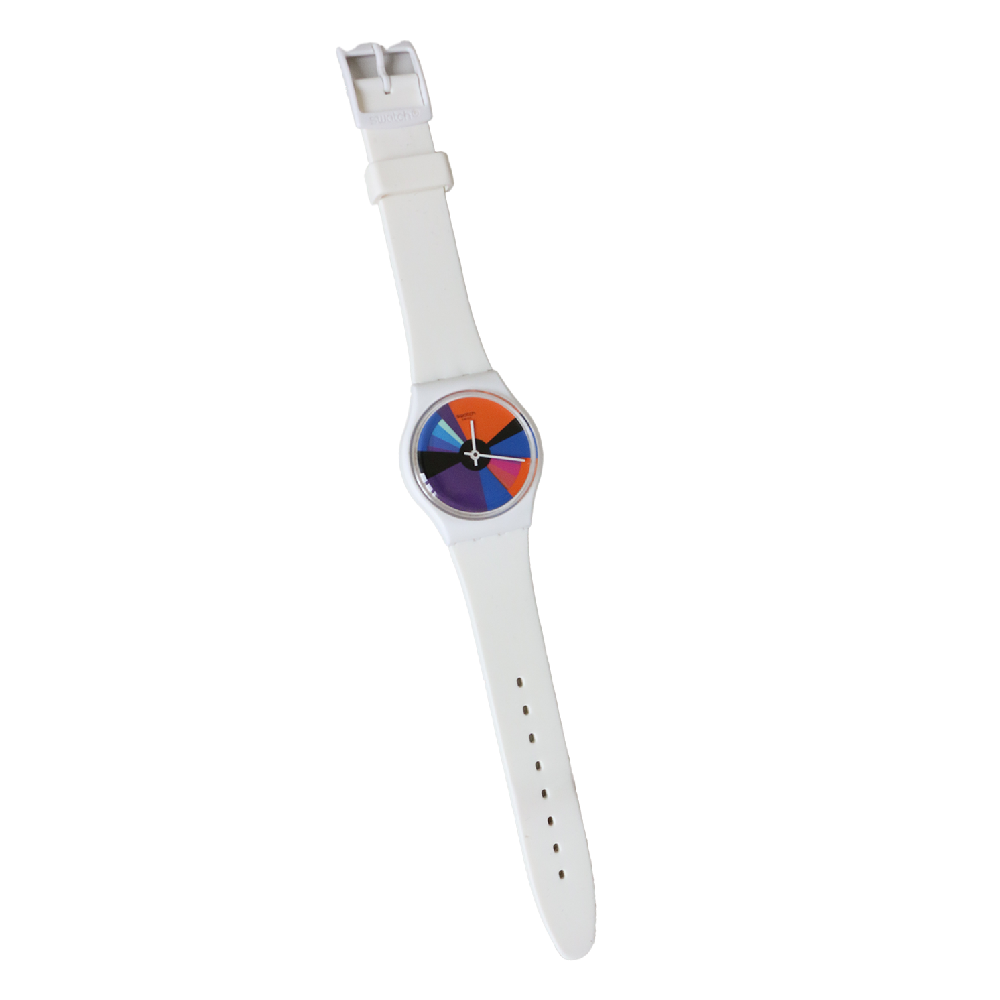
Made by people like you.